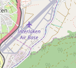
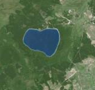

Layers
each item we add to map div is a layer like : OpenStreetMap , Polyline , Polygon , icon etc ... this page . first look :


code :
//style in head
<style>
#osm , #GeoportailFrance_orthos {
position: absolute;
z-index: 99999;
padding: 5px;
}
#osm {
top : 300px;
left : 5px ;
}
#GeoportailFrance_orthos {
top : 350px ;
left : 5px ;
}
</style>
//map div in body
<body>
<center>
<div id="map" style="width: 400px;height: 400px">
<button id="osm" class="ui orange disabled button"></button>
<button id="GeoportailFrance_orthos" class="ui olive button"></button>
</div>
</center>
</body>
//script in of the body
<script>
var map = L.map('map',{
center: [46.685182 , 7.865076],
zoom: 18
});
//add open street map layer to map div
var osm = L.tileLayer('http://{s}.tile.osm.org/{z}/{x}/{y}.png', {
attribution: '&copy; <a href="http://osm.org/copyright">OpenStreetMap</a> contributors',
maxZoom: 5,
id: 'mapbox.streets',
}).addTo(map);
// add GeoportailFrance_orthos to map div
var GeoportailFrance_orthos = L.tileLayer('https://wxs.ign.fr/{apikey}/geoportail/wmts?REQUEST=GetTile&SERVICE=WMTS&VERSION=1.0.0&STYLE={style}&TILEMATRIXSET=PM&FORMAT={format}&LAYER=ORTHOIMAGERY.ORTHOPHOTOS&TILEMATRIX={z}&TILEROW={y}&TILECOL={x}', {
attribution: '<a target="_blank" href="https://www.geoportail.gouv.fr/">Geoportail France</a>',
bounds: [[-75, -180], [81, 180]],
minZoom: 2,
maxZoom: 5,
apikey: 'choisirgeoportail',
format: 'image/jpeg',
style: 'normal'
});
$("#GeoportailFrance_orthos").click(function() {
$("#GeoportailFrance_orthos").addClass("disabled");
$("#osm").removeClass("disabled");
map.removeLayer(osm);
GeoportailFrance_orthos.addTo(map);
});
$("#osm").click(function() {
$("#osm").addClass("disabled");
$("#GeoportailFrance_orthos").removeClass("disabled");
map.removeLayer(GeoportailFrance_orthos);
osm.addTo(map);
});
</script>
the big notice is we decrease mapZoom of "OSM" to 5 because "GeoportailFrance_orthos" not showing most of the coordiantes with high zoom
By Arash Bandarchian